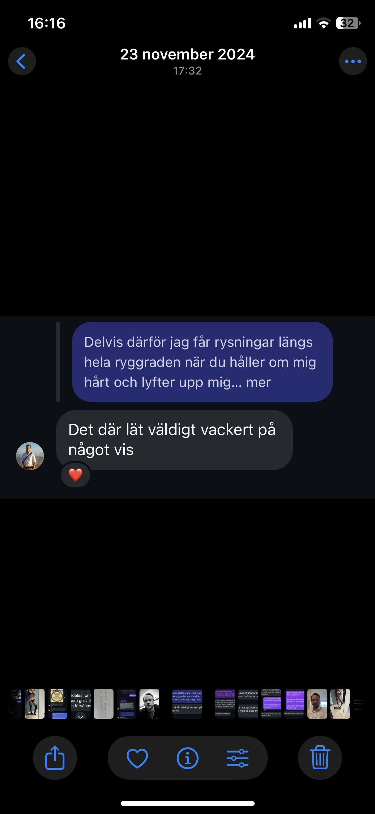
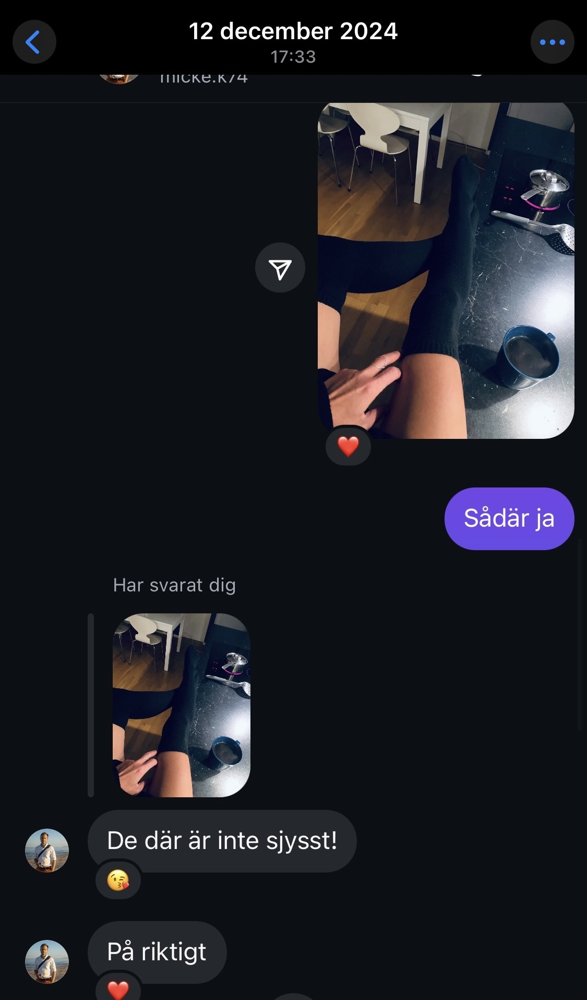
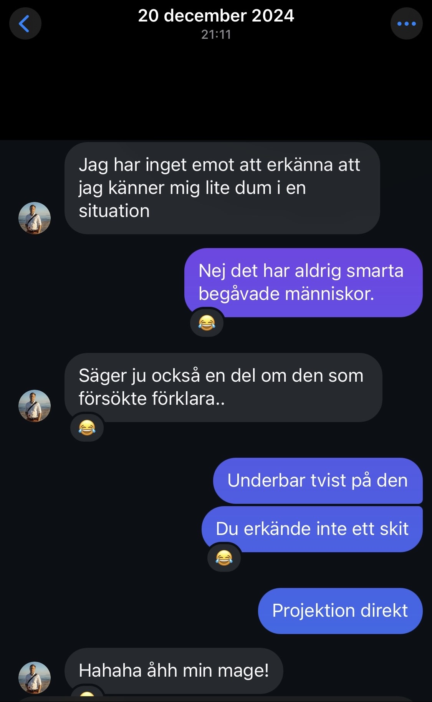
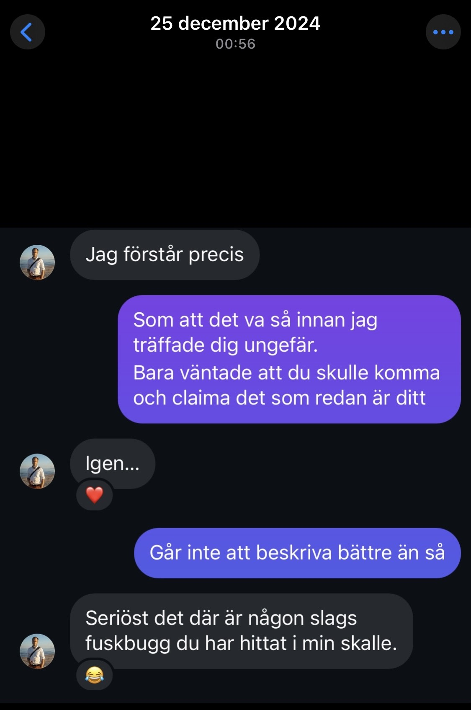
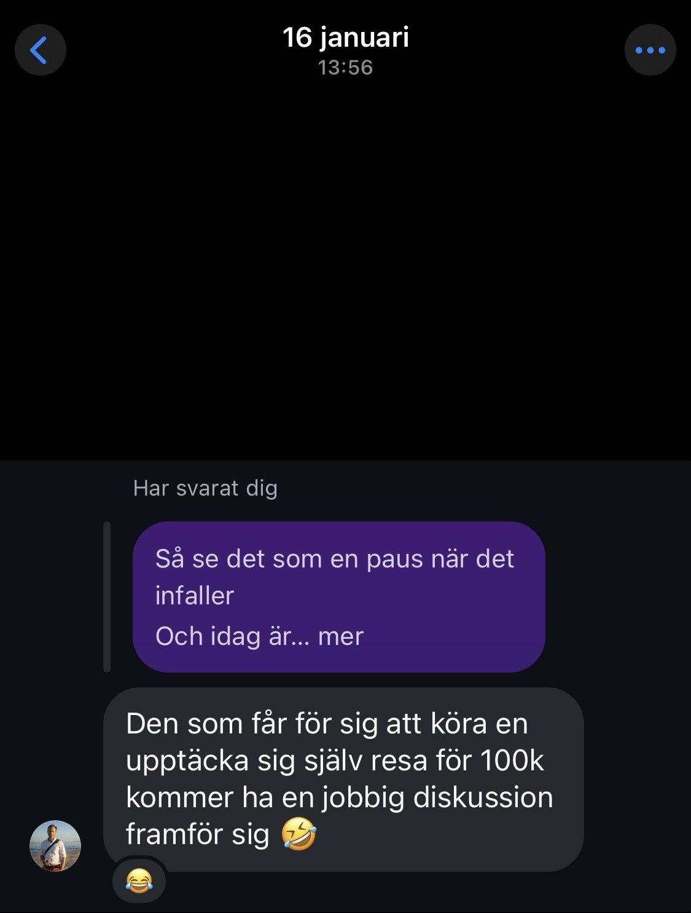
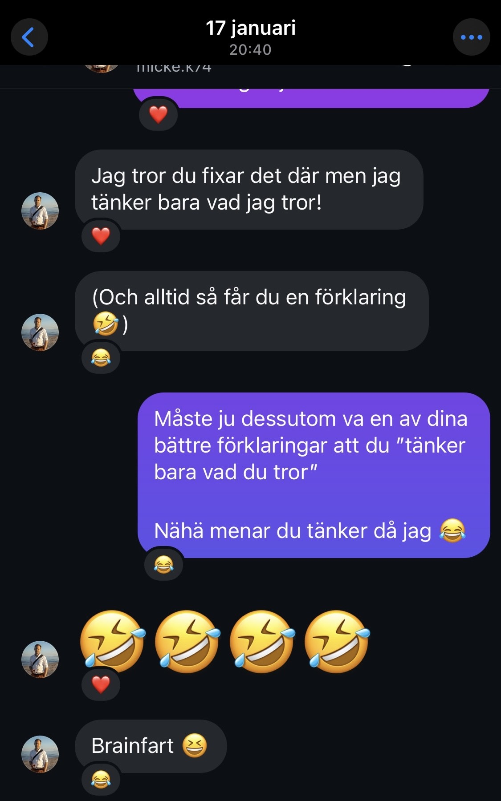
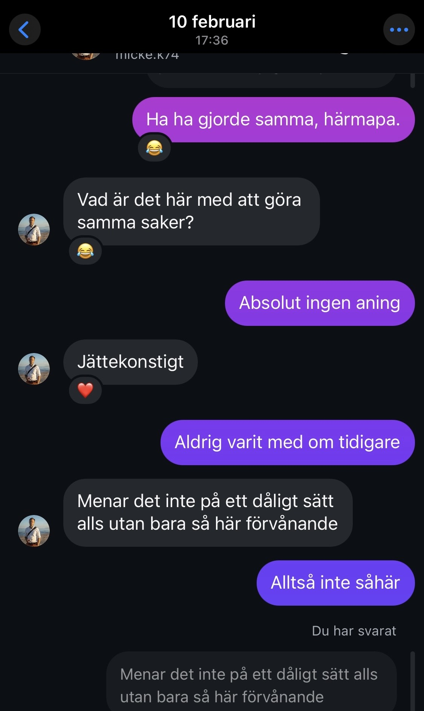
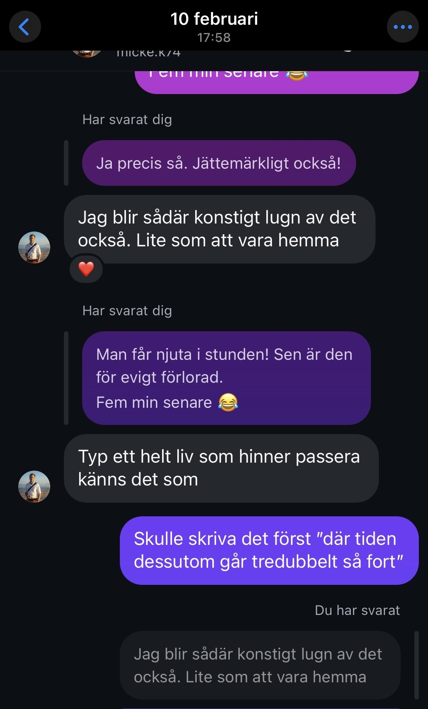
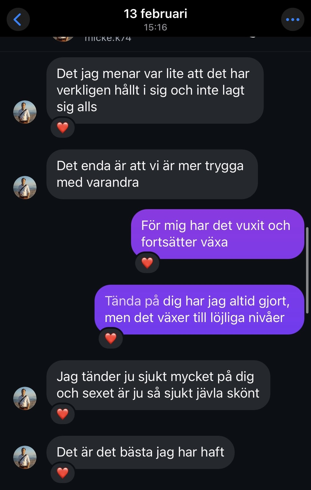
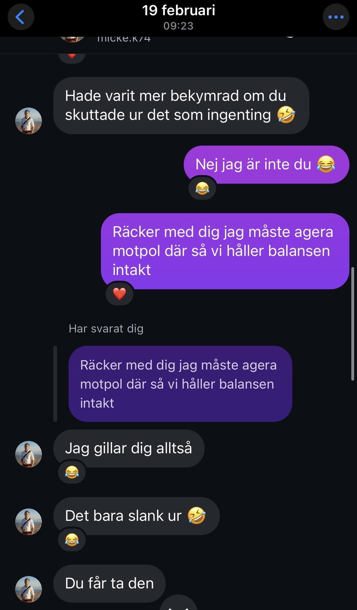

Bilden talar för sig själv, bff forever!
Aldrig blivit så överraskad som när du av alla (sjusovare) ställde larm och skrev till mig sådär tidigt på morgonen, det var som julklapp och födelsedagspresent och den varmaste av kramar. Stort!
Förälskad i konversationen deluxe, från bådas håll. Snacka om att det sa klick där direkt.
När du sakta börja nosa på ärligheten om än försiktigt
Och jag började våga öppna mig om min önskan efter kram och få luta mig och hur nytt det var för mig att våga göra det med dig.
Att inse hur mycket du uppskattade en sån enkel sak som bild på när jag bakade, hur du såg detaljerna i mitt sätt att älska förberedelsen/ordningen.
Din kärlek för benen sittandes på köksbänken.
Den återkommande kommentaren.
Sk erkännandet, ett klassiskt asgarv och asvåt moment.
Då dörren ner till smutsen öppnades, din reaktion på mina bojor och annat som låg orörda i sina lådor och väntade.
Tilten du inte visste existerade när ”ge bort mig” konceptet började sätta sig.
Klassisk på gymmet session där du allt som oftast började skratta rakt ut.
Behövs knappast kommentar, bland det roligaste du sagt.
Varför denna kanske du tänker? För mig var det så mycket fortfarande då att liksom ”jag som vunnit vinsten”, att varför vill han ha mig ungefär, men när du sa sådär så blev det lite aha en mini ”Johanna blixt”. Väldigt smickrande dessutom.
En av de små underbara egenheterna i den roligaste av form.
Kan va svårt att föreställa sig nu hur lång tid vi tog på oss att kyssas. Lustigt hur vi båda hade tänkt innan att ”nu ska det ske”. Sen dess en solklar favorit!
För mig en typisk du i bemärkelsen att du inte ”ville inse” eller erkänna för dig själv vad såna saker som att vi tänkte på samma saker allt som oftast berodde på. Kommer ihåg hur jag tänkte ”absolut jättekonstigt hörrö”. Alltid tänkt han kommer förstå i sin takt.
Filmklipp började skickas och effekten av det var oroande nära tvångströjan på oss båda.
Tiden och dess sjuka perspektiv som alltid existerat oss emellan. Som en egen tidszon där känslorna styr och desto mer de utvecklade sig desto konstigare blev uppfattningen. Något som inte förändrats, det som ändrats är däremot behovet av att vilja ha just all tid tillsammans.
Kommer inte ifrån det. Hur rätt det ändå är. Och att det gick så fort.
Låter vårt sinnessjuka sex få ta lite plats, fortsatt bättre och bättre och bättre, mörkare, smutsigare och därmed mer kärleksfullt.
Enbart för att det är så mycket vi och härligheten i det.
Och du fortsatte ”öppna dig” fortfarande ursäktande och skyddande med saker som ”det bara slank ur”, men det slank ur.
Minns hur vi då och den dagen skrev nästan varenda minut och skratten tog aldrig slut.
Du började tänka mer på mig, givetvis i din ursäktande form. Och vi fortsatte tänka klockrent samma lika.
Tidsperspektivet blev bara skevare och skevare
Du började öppna upp vad du faktsikt kände, satte det i ord.